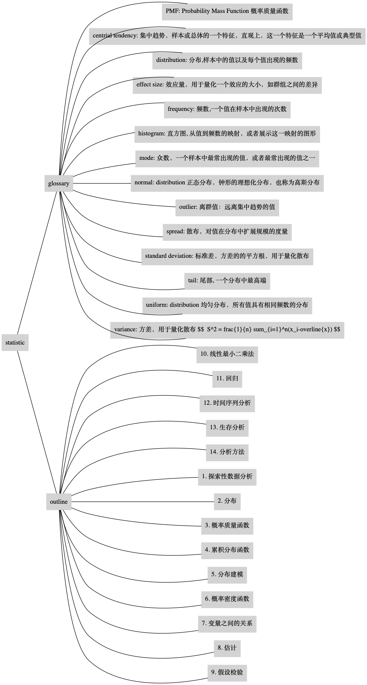

YAML and Mindmap
Posted on Sun 26 July 2020 in Journal
最近在读一本书 “Think Stats”, 中文名为“统计思维 - 程序员数学之概率统计”。 这本书写得挺有意思，简单易读，而且还是一本统计方面的词典。这不，写了一点笔记
- statistic.yaml
outline:
- 1. 探索性数据分析
- 2. 分布
- 3. 概率质量函数
- 4. 累积分布函数
- 5. 分布建模
- 6. 概率密度函数
- 7. 变量之间的关系
- 8. 估计
- 9. 假设检验
- 10. 线性最小二乘法
- 11. 回归
- 12. 时间序列分析
- 13. 生存分析
- 14. 分析方法
glossary:
- PMF: Probability Mass Function 概率质量函数
- distribution: 分布,样本中的值以及每个值出现的频数
- histogram: 直方图, 从值到频数的映射，或者展示这一映射的图形
- frequency: 频数,一个值在样本中出现的次数
- mode: 众数，一个样本中最常出现的值，或者最常出现的值之一
- normal: distribution 正态分布，钟形的理想化分布，也称为高斯分布
- uniform: distribution 均匀分布，所有值具有相同频数的分布
- tail: 尾部, 一个分布中最高端
- centrial tendency: 集中趋势，样本或总体的一个特征，直观上，这一个特征是一个平均值或典型值
- outlier: 离群值：远离集中趋势的值
- spread: 散布，对值在分布中扩展规模的度量
- variance: 方差，用于量化散布 $$ S^2 = \frac{1}{n} \sum_{i=1}^n(x_i-\overline{x}) $$
- standard deviation: 标准差，方差的的平方根，用于量化散布
- effect size: 效应量，用于量化一个效应的大小，如群组之间的差异
还想画一个思维导图，也不想找什么思维导图软件再画了，索性写一个 Python 脚本， 根据 yaml 文件自动生成一个思维导图。
- 用法
$ python portal/util/yamlmm.py -n statistic -s ./mindmap/statistic.yaml -t ./mindmap/statistic.png
$ open ./mindmap/statistic.png
生成的图片如下

Python 源代码如下
from jinja2 import Template
import sys
import re
import os
import yaml
import re
import argparse
from graphviz import Source
from loguru import logger
logger.add(sys.stdout,
format="{time} {message}",
filter="client",
level="INFO")
GRAPH_TEMPLATE = """
graph {
#label="{{ diagram_name }}";
labelloc=t;
rankdir=LR;
node [shape=box style=filled, color=lightgrey];
{{ diagram_desc }}
{{ diagram_content }}
}
"""
def node_set_desc(node_set, is_sorted=True):
node_desc_list = []
for node in node_set:
node_name = node.get_unique_name()
if node.value:
node_attr = "label=\"{}: {}\"".format(node.name, node.value)
else:
node_attr = "label=\"{}\"".format(node.name)
node_desc_list.append('\t{}[{}];'.format(node_name, node_attr))
if is_sorted:
node_desc_list = sorted(node_desc_list)
return '\n'.join(node_desc_list)
class TreeNode:
def __init__(self, key="", val=None, parent=None):
self.name = key
self.value = val
# list of TreeNode
self.parent = parent
self.children = []
def add_child(self, node):
self.children.append(node)
def set_name(self, name):
self.name = re.sub(r'[\. -]', "_", self.name)
def set_parent(self, parent):
self.parent = parent
def get_unique_name(self):
if self.parent:
valid_name = re.sub(r'[\. -]','_', self.name)
return self.parent.get_unique_name() + "_" + valid_name
else:
return re.sub(r'[\. -]', "_", self.name)
def __repr__(self):
return "{}[lable=\"{}\"], {}".format(self.get_unique_name(), self.value, self.children.__len__())
class YamlMindmap:
def __init__(self, file, name, path="."):
self.yaml_file = file
self.diagram_name = name
self.diagram_path = path
self.root_node = None
self.node_set = set()
self.sequence_list = []
def load_yaml_doc(self):
with open(self.yaml_file, 'r', encoding="utf-8") as fp:
doc = yaml.load(fp, Loader=yaml.FullLoader)
return doc
def load_yaml_docs(self):
yaml_objs = []
with open(self.yaml_file, 'r', encoding="utf-8") as fp:
docs = yaml.load_all(fp, Loader=yaml.FullLoader)
for doc in docs:
yaml_objs.append(doc)
return yaml_objs
def add_sequence(self, fromNode, toNode):
self.sequence_list.append(("{} -- {}".format(fromNode.get_unique_name(), toNode.get_unique_name())))
def dot_to_png(self, dot_content, png_file, **kwargs):
logger.info("dot_to_png from {} to {}".format(dot_content, png_file))
basename = png_file[:-4]
src = Source(dot_content)
file_path = src.render(filename=basename, format='png', cleanup=True)
return os.path.basename(file_path)
def parse_dict(self, parent_node, dict_obj):
for key, val in dict_obj.items():
logger.info("{} -- {}".format(key, val))
node = TreeNode(key, None, parent_node)
if isinstance(val, str) or isinstance(val, int):
node.value = val
elif isinstance(val, dict):
self.parse_dict(node, val)
elif isinstance(val, list):
self.parse_list(node, val)
self.node_set.add(node)
parent_node.add_child(node)
self.add_sequence(parent_node, node)
def parse_list(self, parent_node, list_obj):
for val in list_obj:
if isinstance(val, str) or isinstance(val, int):
node = TreeNode(val, None, parent_node)
self.node_set.add(node)
self.add_sequence(parent_node, node)
parent_node.add_child(node)
elif isinstance(val, dict):
self.parse_dict(parent_node, val)
elif isinstance(val, list):
self.parse_list(parent_node, val)
def draw_graphs(self, name, title=""):
yaml_objs = self.load_yaml_docs()
for yaml_obj in yaml_objs:
self.draw_mindmap(yaml_obj, name, title)
def draw_graph(self, name, title=""):
yaml_obj = self.load_yaml_doc()
return self.draw_mindmap(yaml_obj, name, title)
def draw_mindmap(self, yaml_obj, name, title=""):
self.root_node = TreeNode(name, title)
self.node_set.add(self.root_node)
if isinstance(yaml_obj, dict):
self.parse_dict(self.root_node, yaml_obj)
elif isinstance(yaml_obj, list):
self.parse_list(self.root_node, yaml_obj)
else:
logger.info("yaml is empty")
parameters = {'diagram_name': title or "",
'diagram_desc': node_set_desc(self.node_set),
'diagram_content': '\n'.join(self.sequence_list)}
template = Template(GRAPH_TEMPLATE)
dot_content = template.render(parameters)
if self.diagram_name and self.diagram_name.endswith(".png"):
png_file = "{}/{}".format(self.diagram_path, self.diagram_name)
return self.dot_to_png(dot_content, png_file)
else:
self.content = dot_content.replace('\n', '')
return ""
def draw_mindmap(name, yaml_file, png_file):
obj = YamlMindmap(yaml_file, png_file)
obj.draw_graphs(name)
if __name__ == "__main__":
parser = argparse.ArgumentParser()
parser.add_argument('-n', required=True, action='store', dest='name', help='specify the mindmap name')
parser.add_argument('-s', required=True, action='store', dest='source', help='specify a source yaml file: *.yaml')
parser.add_argument('-t', required=True, action='store', dest='target', help='specify a targe mindmap graph file: *.png')
args = parser.parse_args()
draw_mindmap(args.name, args.source, args.target)